Perfecto, Santiago. Te hago un resumen claro en español del paper “Real-time vacancy concentration evolution revealed via heavy ion irradiation experiments” y luego te marco los puntos principales que trata.
Resumen del paper
Este trabajo presenta una técnica experimental innovadora para medir en tiempo real la concentración de vacancias generadas por irradiación iónica en aleaciones base cobre, particularmente en materiales tipo MIT Plasma Science and Fusion Center y aleaciones como GRCop-84.
Los autores demuestran que la técnica Transient Grating Spectroscopy (TGS), aplicada in situ durante irradiación con iones pesados, permite monitorear directamente la evolución de defectos puntuales (vacancias) mientras el daño por radiación se está produciendo.
La clave del método es que la frecuencia de las ondas acústicas superficiales (SAW) depende del módulo elástico del material, y este a su vez disminuye cuando aumenta la concentración de vacancias. Por lo tanto:
[
f_{SAW} \propto \sqrt{E/\rho}
]
Si el módulo de Young disminuye por la presencia de vacancias, la frecuencia SAW baja.
Al prender el haz de iones:
- Se generan vacancias → disminuye el módulo elástico → baja la frecuencia SAW.
Al apagar el haz:
- Las vacancias comienzan a recombinarse o aniquilarse → el módulo se recupera parcialmente → sube la frecuencia SAW.
Qué hicieron experimentalmente
- Fabricaron películas gruesas de aleaciones Cu–Cr–Nb y Cu–Cr–Ta mediante sputtering.
-
Irradiaron las muestras con:
-
Iones Cu³⁺ (6.5–7 MeV)
- Protones H⁺
-
Midieron en tiempo real:
-
Frecuencia de ondas acústicas superficiales (SAW)
- Difusividad térmica
-
Implementaron experimentos con:
-
Haz pulsado periódico (encendido/apagado cada minutos)
- Pulsos en escala logarítmica de DPA
También midieron cuidadosamente el aumento real de temperatura con cámara infrarroja para demostrar que los cambios en SAW no se deben al calentamiento, sino al daño por radiación.
Resultados principales
- La frecuencia SAW disminuye cuando el haz está encendido y se recupera al apagarlo.
- El efecto no es térmico (la temperatura sube solo ~1–13 °C, insuficiente para explicar la variación elástica observada).
- La concentración de vacancias puede modelarse usando teoría cinética de defectos (rate theory).
-
La evolución medida por TGS coincide con simulaciones de:
-
Kinetic Monte Carlo (akMC)
- Modelos de teoría de tasa estándar
-
Compararon dos composiciones Cu–Cr–Ta y:
-
La relación entre concentraciones de vacancias medidas por TGS coincide con la densidad de voids observada por TEM.
Esto valida la técnica.
Modelo físico que desarrollan
Parten de las ecuaciones de balance de defectos tipo Frenkel:
[
\frac{dC_v}{dt} = producción - recombinación - aniquilación en sinks
]
Distinguen dos regímenes:
Haz encendido
- Se crean vacancias a tasa K₀
- Parte se recombina con intersticiales
- Parte migra a bordes de grano
Resultado:
[
C_v \propto \sqrt{K_0 t}
]
Haz apagado
- No se crean defectos nuevos
- Las vacancias se aniquilan exponencialmente:
[
C_v = C_{v0} e^{-Kt}
]
Esto explica las curvas observadas experimentalmente.
Aportes principales del paper
1⃣ Medición directa en tiempo real
Primera demostración clara de que se puede medir la evolución de vacancias in situ durante irradiación iónica usando TGS.
2⃣ Separación del efecto térmico
Demuestran experimentalmente que la variación elástica observada no se debe al calentamiento del haz.
3⃣ Validación con simulaciones
Los resultados concuerdan con:
- Modelos cinéticos
- Simulaciones atomísticas Monte Carlo
4⃣ Nueva herramienta para materiales de fusión
Proponen TGS como herramienta:
- No destructiva
- No requiere TEM
- Permite múltiples mediciones en la misma muestra
- Accesible comparado con TEM in situ
Esto es relevante para materiales candidatos en reactores de fusión (como tungsteno o aleaciones CuCrZr/GRCop).
5⃣ Comparación Nb vs Ta
Exploran reemplazar Nb por Ta en GRCop para reducir activación neutrónica, mostrando diferencias en resistencia al daño.
Idea central del trabajo
La resistencia al daño por radiación puede evaluarse midiendo en tiempo real la concentración de defectos puntuales fundamentales (vacancias), porque todos los defectos mayores (voids, loops, clusters) evolucionan a partir de ellos.
Y TGS permite hacer eso.
Conclusión del paper
La espectroscopía de red transiente acoplada a irradiación iónica es una herramienta prometedora para:
- Estimar concentración de vacancias en tiempo real
- Evaluar resistencia al daño por radiación
- Validar modelos computacionales
- Comparar materiales candidatos para fusión
Es una técnica rápida, no destructiva y cuantitativa.
Si querés, puedo prepararte:
- Un resumen más corto tipo abstract para presentación
- Un esquema conceptual para una diapositiva
- Un análisis más técnico enfocado en la parte de cinética de defectos (sé que esa parte te va a gustar )
- O relacionarlo con tus simulaciones en LAMMPS/OVITO
Decime para qué lo necesitás.
Figuras del Paper (15)
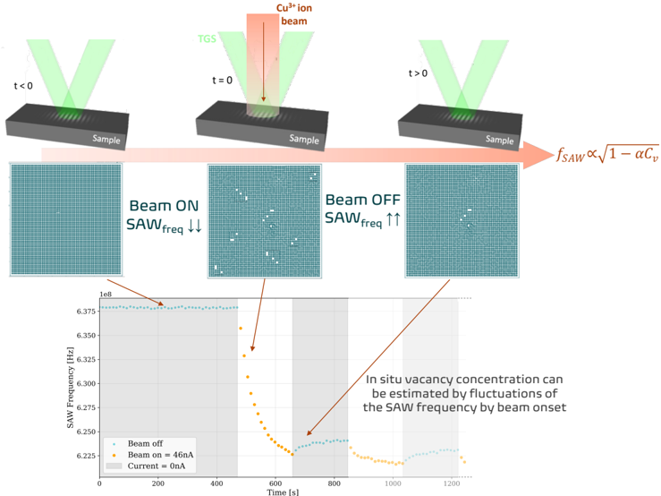
Sin caption
Figura en pagina 1.

Figure 1: Scheme of TGS coupled with in situ irradiation. Adapted from [24].
Figure 1: Scheme of TGS coupled with in situ irradiation. Adapted from [24].

Figure 2: Irradiation depth profile as calculated by SRIM and nominal TGS e-folding depth sensitivity for thermal and acoustic wave properties.
Figure 2: Irradiation depth profile as calculated by SRIM and nominal TGS e-folding depth sensitivity for thermal and acoustic wave properties.

Figure 3: in situ TGS results from 7 MeV Cu 3+ irradiation at 23.3 mW (a) and from 1.63 MeV proton irradiation (b). Most crucially, these two results show that two experiments with the same beam heating power in Watts produce changes in SAW frequency proportional to their ion stopping powers, and not to beam heating temperature. This isolates the effect of beam heating from vacancy concentration on the changes in SAW frequency and thermal diffusivity. c) 0.2% offset Yield Strength model for GRCop-84 from [35], showing that a 0.4% change in elastic properties would imply an increase in temperature of 140 ◦ C . d) Infrared camera calibration and temperature measurement for different isotopes of copper at 1.68MV terminal potential. This plot shows that the maximum increase in temperature for Cu 2+ is 13 ◦ C , and just around 1 . 5 ◦ C for 15 nA of Cu 3+ (current conditions used in plots a) and b).
Figure 3: in situ TGS results from 7 MeV Cu 3+ irradiation at 23.3 mW (a) and from 1.63 MeV proton irradiation (b). Most crucially, these two results show that two experiments with the same beam heating power in Watts produce changes in SAW frequency proportional to their ion stopping powers, and not to beam heating temperature. This isolates the effect of beam heating from vacancy concentration on the changes in SAW frequency and thermal diffusivity. c) 0.2% offset Yield Strength model for GRCop-84 from [35], showing that a 0.4% change in elastic properties would imply an increase in temperature of 140 ◦ C . d) Infrared camera calibration and temperature measurement for different isotopes of copper at 1.68MV terminal potential. This plot shows that the maximum increase in temperature for Cu 2+ is 13 ◦ C , and just around 1 . 5 ◦ C for 15 nA of Cu 3+ (current conditions used in plots a) and b).

Figure 4: Periodic pulsed beam experiment, showing how SAW frequency evolves as the Cu-ion beam is cycled on and off. The white background and orange dots represent the periods in which the beam is on, and the grey background and blue dots represent the periods in which the beam is off.
Figure 4: Periodic pulsed beam experiment, showing how SAW frequency evolves as the Cu-ion beam is cycled on and off. The white background and orange dots represent the periods in which the beam is on, and the grey background and blue dots represent the periods in which the beam is off.
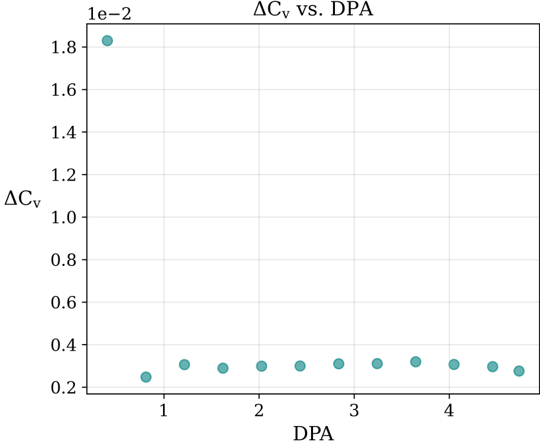
Figure 5: Vacancy concentration evolution with increasing dose for a periodic pulsed beam experiment. The initial large increase represents the change from only thermal point defects (here we deem this to be negligible) to a high concentration, while the increases at all subsequent doses are much smaller as the proliferation of radiation defects from initial irradiation quickly reduces later vacancy concentrations.
Figure 5: Vacancy concentration evolution with increasing dose for a periodic pulsed beam experiment. The initial large increase represents the change from only thermal point defects (here we deem this to be negligible) to a high concentration, while the increases at all subsequent doses are much smaller as the proliferation of radiation defects from initial irradiation quickly reduces later vacancy concentrations.
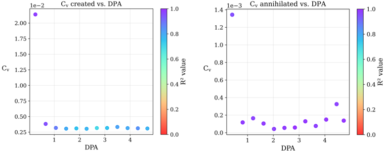
Figure 6: Vacancy concentration calculated for each beam pulse during the logarithmic pulsed-beam experiment (Fig. 4). The concentration of vacancies created corresponds to the beam on periods, and the concentration of vacancies annihilated corresponds to the beam off periods. The color of each point corresponds to the quality of the data, measured by R 2 value.
Figure 6: Vacancy concentration calculated for each beam pulse during the logarithmic pulsed-beam experiment (Fig. 4). The concentration of vacancies created corresponds to the beam on periods, and the concentration of vacancies annihilated corresponds to the beam off periods. The color of each point corresponds to the quality of the data, measured by R 2 value.
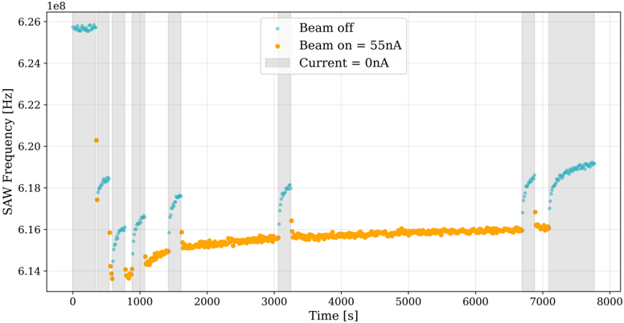
Figure 7: Logarithmic pulsed beam experiment. The white background and orange dots represent the periods in which the beam is on, and the grey background and blue dots represent the periods in which the beam is off.
Figure 7: Logarithmic pulsed beam experiment. The white background and orange dots represent the periods in which the beam is on, and the grey background and blue dots represent the periods in which the beam is off.
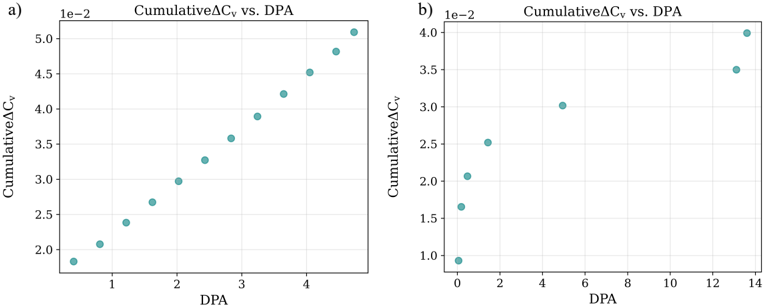
Figure 8: Cumulative vacancy concentration comparison between a) the periodic pulsedbeam, and b) the logarithmic scale pulsed-beam experiments.
Figure 8: Cumulative vacancy concentration comparison between a) the periodic pulsedbeam, and b) the logarithmic scale pulsed-beam experiments.
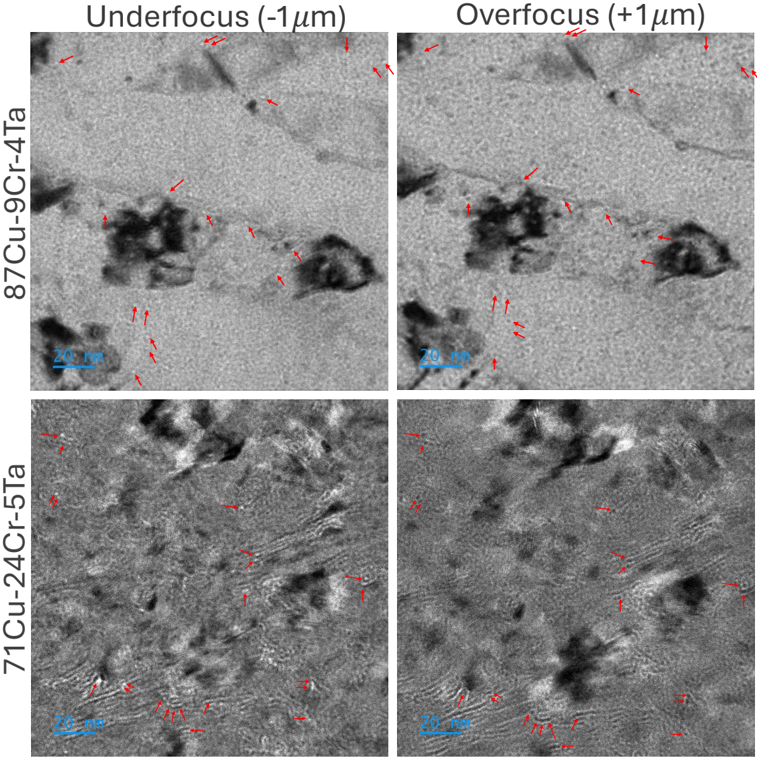
Figure 9: TEM images from the different Cu-Cr-Ta compositions. On the left side pictures were taken with an underfocus value of -1 µm , and images on the right column were taken with an overfocus value of +1 µm .
Figure 9: TEM images from the different Cu-Cr-Ta compositions. On the left side pictures were taken with an underfocus value of -1 µm , and images on the right column were taken with an overfocus value of +1 µm .
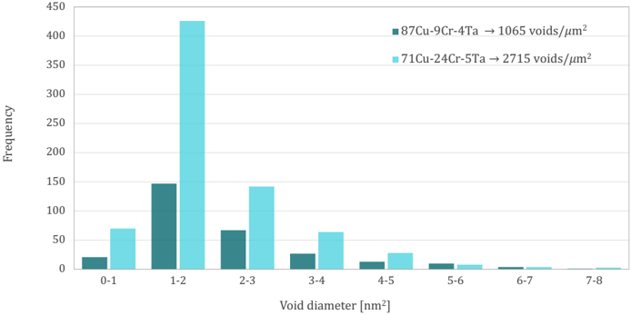
Figure 10: Distribution of the number and size of voids detected on each sample. Void densities per µm 2 for each composition are shown in the upper right.
Figure 10: Distribution of the number and size of voids detected on each sample. Void densities per µm 2 for each composition are shown in the upper right.
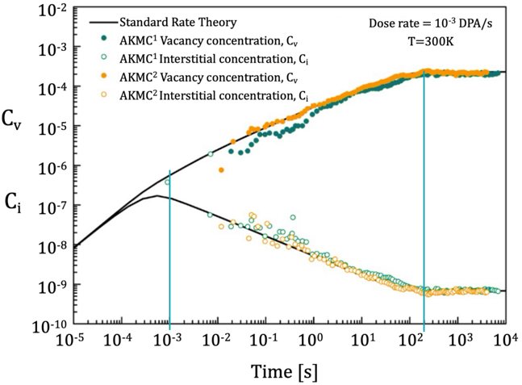
Figure 11: Point defect evolution for FeNi at 300K and 10-3 DPA/s, obtained from standard rate theory and atomistic kinetic Monte Carlo (AKMC) simulations using a random sink distribution and an annihilation rate of sinks. Plot adapted from [36].
Figure 11: Point defect evolution for FeNi at 300K and 10-3 DPA/s, obtained from standard rate theory and atomistic kinetic Monte Carlo (AKMC) simulations using a random sink distribution and an annihilation rate of sinks. Plot adapted from [36].
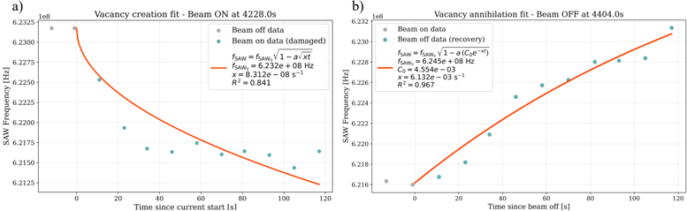
Figure 12: Beam on/off period fitting. The data from these fitting correspond to the 4228 s beam on period and the 4404 s beam off period from Figure 4.
Figure 12: Beam on/off period fitting. The data from these fitting correspond to the 4228 s beam on period and the 4404 s beam off period from Figure 4.
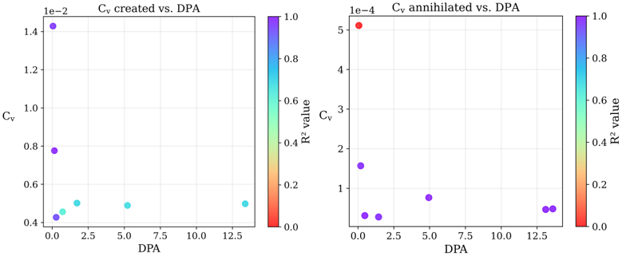
Figure 13: Vacancy concentration calculated for each beam pulse during the logarithmic pulsed-beam experiment (Figure 7). the concentration of vacancies created correspond to the beam on periods, and the concentration of vacancies annihilated correspond to the beam off period. The color of each point corresponsd to the quality of the data, measured by its R 2 value.
Figure 13: Vacancy concentration calculated for each beam pulse during the logarithmic pulsed-beam experiment (Figure 7). the concentration of vacancies created correspond to the beam on periods, and the concentration of vacancies annihilated correspond to the beam off period. The color of each point corresponsd to the quality of the data, measured by its R 2 value.
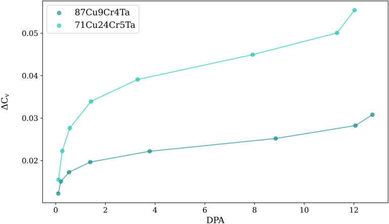
Figure 14: Cumulative vacancy concentration calculated for Cu-9Cr-4Ta (dark blue) and Cu-24Cr-5Ta (light blue) with increasing DPA, showing that the former, despite lower alloying element concentration, exhibits less vacancy concentration increase at similar doses.
Figure 14: Cumulative vacancy concentration calculated for Cu-9Cr-4Ta (dark blue) and Cu-24Cr-5Ta (light blue) with increasing DPA, showing that the former, despite lower alloying element concentration, exhibits less vacancy concentration increase at similar doses.